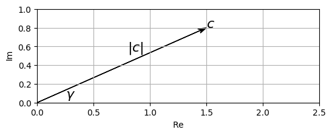
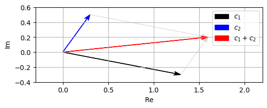
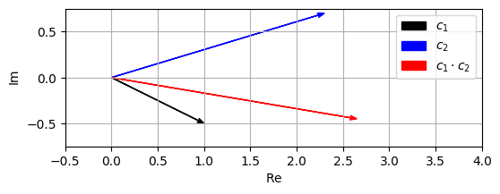
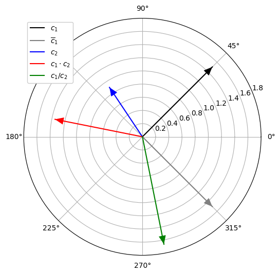
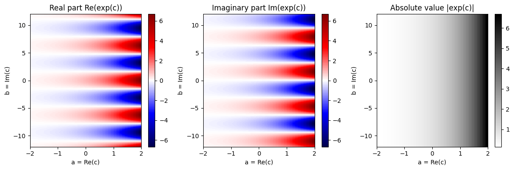
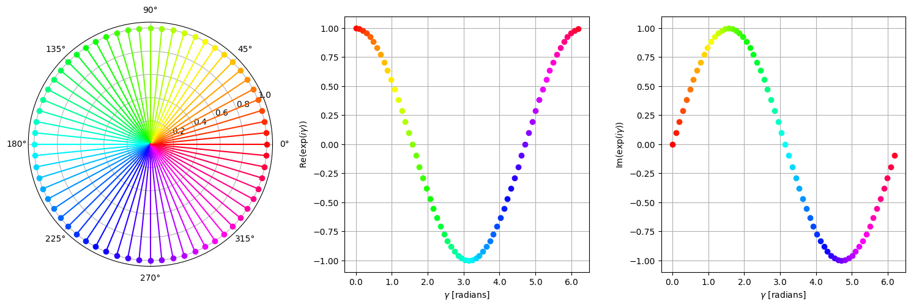
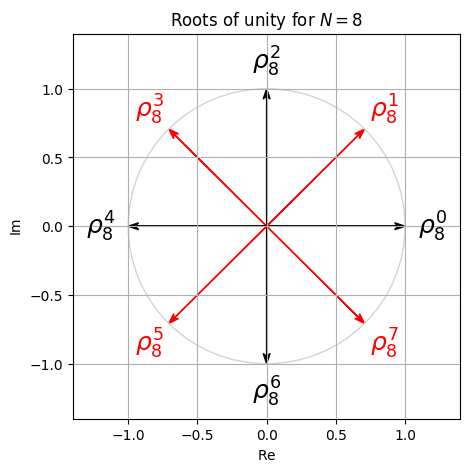
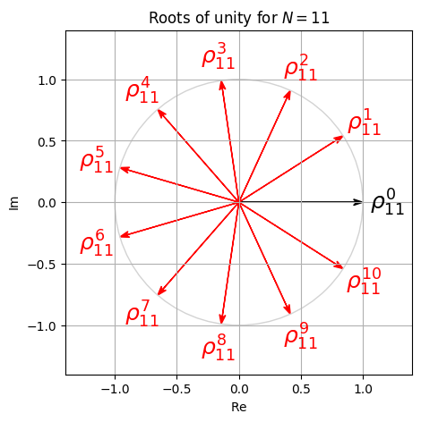
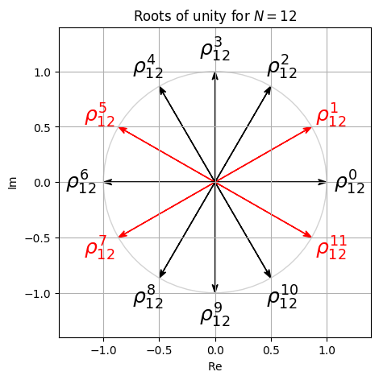

import numpy as np
from matplotlib import pyplot as plt
from math import gcd
from IPython.display import Image푸리에 변환(Fourier transform)을 보기 전에 이와 관련한 몇가지 수학적 개념(복소수, 지수함수)을 리뷰해보록 한다.
이 글은 FMP(Fundamentals of Music Processing) Notebooks을 참고로 합니다.
복소수 (Complex Numbers)
기본 개념
- 실수 부분 \(\mathrm{Re}(c) = a\), 허수 부분 \(\mathrm{Im}(c) = b\) 및 허수 단위 \(i = \sqrt{-1}\)로 복소수 \(c = a + ib\)를 쓸 수 있다. 파이썬에서 기호
j는 허수의 단위를 나타내기 위해 사용된다. 또한j앞의 계수가 필요하다. 복소수를 지정하기 위해complex라는 생성자를 사용할 수도 있다.
a = 1.5
b = 0.8
c = a + b*1j
print(c)
c2 = complex(a,b)
print(c2)(1.5+0.8j)
(1.5+0.8j)print(np.real(c))
print(np.imag(c))1.5
0.8def generate_figure(figsize=(6, 2), xlim=[0, 1], ylim=[0, 1]):
"""Generate figure for plotting complex numbers
Args:
figsize: Figure size (Default value = (2, 2))
xlim: Limits of x-axis (Default value = [0, 1])
ylim: Limits of y-axis (Default value = [0, 1])
"""
plt.figure(figsize=figsize)
plt.grid()
plt.xlim(xlim)
plt.ylim(ylim)
plt.xlabel(r'$\mathrm{Re}$')
plt.ylabel(r'$\mathrm{Im}$')
def plot_vector(c, color='k', start=0, linestyle='-'):
"""Plot arrow corresponding to difference of two complex numbers
Args:
c: Complex number
color: Color of arrow (Default value = 'k')
start: Complex number encoding the start position (Default value = 0)
linestyle: Linestyle of arrow (Default value = '-')
Returns:
arrow (matplotlib.patches.FancyArrow): Arrow
"""
return plt.arrow(np.real(start), np.imag(start), np.real(c), np.imag(c),
linestyle=linestyle, head_width=0.05, fc=color, ec=color, overhang=0.3,
length_includes_head=True)c = 1.5 + 0.8j
generate_figure(xlim=[0, 2.5], ylim=[0, 1])
v = plot_vector(c, color='k')
plt.text(1.5, 0.8, '$c$', size='16')
plt.text(0.8, 0.55, '$|c|$', size='16')
plt.text(0.25, 0.05, '$\gamma$', size='16');
극좌표 표현 (Polar Representation)
- 복소수 \(a+ib\) 의 절대값 (absolute value or modulus)은 다음과 같이 정의된다.
- \(|c| := \sqrt{a^2 + b^2}.\)
- (radian으로 주어진) 각도(angle)는 다음과 같다.
- \(\gamma := \mathrm{atan2}(b, a).\)
- 이는 \((-\pi,\pi]\) 간격의 숫자를 생성하며, 이 값은 음의 값에 \(2\pi\)를 추가하여 \([0,2\pi)\)에 매핑될 수 있다. 각도(degree 단위)는 다음과 같이 구한다.
- \(360 \cdot \frac{\gamma}{2\pi}\)
print('Absolute value:', np.abs(c))
print('Angle (in radians):', np.angle(c))
print('Angle (in degree):', np.rad2deg(np.angle(c)))
print('Angle (in degree):', 360 * np.angle(c)/(2*np.pi) )Absolute value: 1.7
Angle (in radians): 0.48995732625372834
Angle (in degree): 28.07248693585296
Angle (in degree): 28.07248693585296- 복소수 \(c=a+ib\)는 \((|c|, \gamma)\) 쌍에 의해 고유하게 정의되며, 이는 \(c\)의 극좌표 표현(polar representation)이라고도 한다. 다음과 같이 극좌표 표현 \((|c|,\gamma)\)에서 데카르트 표현(Cartesian representation) \((a,b)\)를 얻는다.
\[\begin{eqnarray} a &=& |c| \cdot \cos(\gamma) \\ b &=& |c| \cdot \sin(\gamma) \end{eqnarray}\]
연산
- 두 복소수 \(c_1=a_1+ib_1\)와 \(c_2=a_2+ib_2\)의 경우, 합은 다음과 같다.
\[ c_1 + c_2 = (a_1 + ib_1) + (a_2 + ib_2) := (a_1 + a_2) + i(b_1 + b_2) \]
- 실수 부분과 허수 부분을 개별적으로 합산하여 정의한다. 덧셈의 기하학적 직관은 평행사변형으로 시각화할 수 있다.
c1 = 1.3 - 0.3j
c2 = 0.3 + 0.5j
c = c1 + c2
generate_figure(xlim=[-0.3, 2.2], ylim=[-0.4, 0.6])
v1 = plot_vector(c1, color='k')
v2 = plot_vector(c2, color='b')
plot_vector(c1, start=c2, linestyle=':', color='lightgray')
plot_vector(c2, start=c1, linestyle=':', color='lightgray')
v3 = plot_vector(c, color='r')
plt.legend([v1, v2, v3], ['$c_1$', '$c_2$', '$c_1+c_2$']);
- 두 숫자 \(c_1=a_1+ib_1\)와 \(c_2=a_2+ib_2\)의 복소수 곱셈은 다음과 같이 정의된다.
\[c = c_1 \cdot c_2 = (a_1 + ib_1) \cdot (a_2 + ib_2) := (a_1a_2 - b_1b_2) + i(a_1b_2 + b_1a_2).\]
- 기하학적으로, 이 곱은 각도를 더하고 절대값을 곱함으로써 얻어진다. 다시 말해, \((|c_1|, \gamma_1)\)와 \((|c_2|, \gamma_2)\)가 각각 \(c_1\)와 \(c_1\)의 극좌표 표현이라면, \(c\)의 극좌표 표현 \((|c|, \gamma)\)는 다음과 같이 주어진다.
\[\begin{eqnarray} \gamma &=& \gamma_1 + \gamma_2 \\ |c| &=& |c_1| \cdot |c_2| \end{eqnarray}\]
c1 = 1.0 - 0.5j
c2 = 2.3 + 0.7j
c = c1 * c2
generate_figure(xlim=[-0.5, 4.0], ylim=[-0.75, 0.75])
v1 = plot_vector(c1, color='k')
v2 = plot_vector(c2, color='b')
v3 = plot_vector(c, color='r')
plt.legend([v1, v2, v3], ['$c_1$', '$c_2$', '$c_1 \cdot c_2$']);
극좌표계 (Polar Coordinate Plot)
def plot_polar_vector(c, label=None, color=None, start=0, linestyle='-'):
# plot line in polar plane
line = plt.polar([np.angle(start), np.angle(c)], [np.abs(start), np.abs(c)], label=label,
color=color, linestyle=linestyle)
# plot arrow in same color
this_color = line[0].get_color() if color is None else color
plt.annotate('', xytext=(np.angle(start), np.abs(start)), xy=(np.angle(c), np.abs(c)),
arrowprops=dict(facecolor=this_color, edgecolor='none',
headlength=12, headwidth=10, shrink=1, width=0))#head_width=0.05, fc=color, ec=color, overhang=0.3, length_includes_head=True
c_abs = 1.5
c_angle = 45 # in degree
c_angle_rad = np.deg2rad(c_angle)
a = c_abs * np.cos(c_angle_rad)
b = c_abs * np.sin(c_angle_rad)
c1 = a + b*1j
c2 = -0.5 + 0.75*1j
plt.figure(figsize=(6, 6))
plot_polar_vector(c1, label='$c_1$', color='k')
plot_polar_vector(np.conj(c1), label='$\overline{c}_1$', color='gray')
plot_polar_vector(c2, label='$c_2$', color='b')
plot_polar_vector(c1*c2, label='$c_1\cdot c_2$', color='r')
plot_polar_vector(c1/c2, label='$c_1/c_2$', color='g')
plt.ylim([0, 1.8]);
plt.legend(framealpha=1);
지수 함수 (Exponential Function)
Power Series (멱급수)
실 지수 함수(real exponential function) \(\exp:\mathbb{R}\to \mathbb{R}\)는 많은 수학 응용에서 볼 수 있다. 그리고 이 함수는 많은 다른 방식으로 특성화될 수 있다.
역사적으로 지수 함수는 금리를 고려할 때 \(17^\mathrm{th}\) 세기에 Johann Bernoulli에 의해 연구된 바 있다.
- \(1\)의 이자를 매월 복합된 연간 금리로 이자 \(a\)를 얻는다고 가정하자. 그런 다음 매달 얻은 이자는 현재 값의 \(\frac{a}{12}\)배이므로, 매달 총 값에 \(\left(1+\frac{a}{12}\right)\)를 곱하고 연말의 값은 \(\left(1+\frac{a}{12}\right)^{12}\)이다. 매일 이자가 복합되는 경우 \(\left(1+\frac{a}{365}\right)^{365}\)가 된다.
시간 간격을 더 짧게 함으로써 매년 증가하도록 하는 것은 지수 함수의 limit 정의로 이어진다.
- \(\exp(a) = \mathrm{lim}_{n\to\infty} \left(1+\frac{a}{n}\right)^{n},\)
상수 \(e:=\exp(1)\approx 2.71828 \ldots\)는 Euler의 숫자로도 알려져 있다. 위의 정의에서 \(n\)-fold 곱을 확장하면 지수 함수가 다음과 같은 멱급수로 표현될 수 있음을 보여줄 수 있다. \[\exp(a) := \sum_{n=0}^{\infty} \frac{a^n}{n!} = 1 + a + \frac{a^2}{1 \cdot 2} + \frac{a^3}{1 \cdot 2 \cdot 3} + \cdot\]
멱급수에서 실수값 변수 \(a\in\mathbb{R}\)를 복소수 값 변수 \(c\in\mathbb{C}\)로 바꾸면, 여전히 다음과 같이 주어진 복소수 지수 함수 \(\exp:\mathbb{C}\to \mathbb{C}\)를 얻는다.
\[\exp(c) := \sum_{n=0}^{\infty} \frac{c^n}{n!} = 1 + c + \frac{c^2}{1 \cdot 2} + \frac{c^3}{1 \cdot 2 \cdot 3} + \cdot\]
복소수 지수 함수의 정의를 기반으로 삼각 함수(예: \(\sin\) 및 \(\cos\))의 정의를 복소 인수로 확장할 수도 있다.
다음 구현은 매개 변수 \(N\in\mathbb{N}\)에 의해 지정된 첫 번째 \(N\) 항만 고려하여 멱급수의 근사치를 산출한다. \(c=1\)의 경우, 숫자 \(e\)에 대한 근사치를 산출한다.
def exp_power_series(c, N):
"""Compute power series for exponential function
Args:
c: Complex number
N: Number of summands used for approximation
Returns:
exp_c: Approximation of exp(c)
"""
exp_c = 1
c_power = 1
nfac = 1
for n in range(1, N):
nfac *= n
c_power *= c
exp_c += c_power / nfac
return exp_cc=1
print('Approximation (N = 1):', exp_power_series(c, 1))
print('Approximation (N = 2):', exp_power_series(c, 2))
print('Approximation (N = 4):', exp_power_series(c, 4))
print('Approximation (N = 8):', exp_power_series(c, 8))
print('Approximation (N = 12):', exp_power_series(c, 12))
print('Numpy: ', np.exp(c))Approximation (N = 1): 1
Approximation (N = 2): 2.0
Approximation (N = 4): 2.6666666666666665
Approximation (N = 8): 2.7182539682539684
Approximation (N = 12): 2.718281826198493
Numpy: 2.718281828459045지수 항등식과 오일러 공식 (Exponentiation Identity and Euler’s Formula )
멱급수 정의에 기초하여, 많은 속성을 설명하는 지수 함수의 두 가지 유명한 공식을 증명할 수 있다.
첫 번째 공식은 지수 항등식 exponentation identity로 알려져 있으며 다음과 같다.
\[ \exp(c_1 + c_2) = \exp(c_1)\cdot \exp(c_2) \]
for any complex numbers \(c_1, c_2\in\mathbb{C}\).
- 특히, 이 속성은 실수 인수의 기하급수적인 증가를 설명한다. 예를들면,
\[ \exp(n) = \exp(1+1+\ldots +1) = \exp(1)^n = e^n \]
for \(n\in\mathbb{N}\).
- 오일러 공식 Euler’s formula로 알려진 두 번째 공식은 순 허수(pure imaginary)의 인수에서 지수 함수의 값을 삼각 함수와 연관시킨다. 이는 일부 실수 값 \(\beta\in\mathbb{R}\)와 함께 복소수 \(c = i\gamma\)에 대해, 다음의 항등식을 가진다.
\[\mathrm{exp}(i\gamma) = \cos(\gamma) + i\sin(\gamma)\]
실제로 실수 사인 및 코사인 함수를 시작으로 오일러 공식을 사용하여 \(\mathrm{exp}(i\gamma)\)를 정의하는 경우가 많다.
다음 그림에 나온 것처럼 허수(수직) 축을 따라 \(\exp\)의 실수 및 허수 부분의 주기적인 행동을 설명한다.
A, B = np.meshgrid(np.arange(-2, 2, 0.1), np.arange(-12, 12, 0.1))
C = A + B*1j
f_exp = np.exp(C)
plt.figure(figsize=(12, 4))
extent = [-2, 2, -12, 12]
plt.subplot(1, 3, 1)
plt.imshow(np.real(f_exp), aspect='auto', cmap='seismic', origin='lower', extent=extent)
plt.title('Real part Re(exp(c))')
plt.xlabel('a = Re(c)')
plt.ylabel('b = Im(c)')
plt.colorbar()
plt.subplot(1, 3, 2)
plt.imshow(np.imag(f_exp), aspect='auto', cmap='seismic', origin='lower', extent=extent)
plt.title('Imaginary part Im(exp(c))')
plt.xlabel('a = Re(c)')
plt.ylabel('b = Im(c)')
plt.colorbar()
plt.subplot(1, 3, 3)
plt.imshow(np.abs(f_exp), aspect='auto', cmap='gray_r', origin='lower', extent=extent)
plt.title('Absolute value |exp(c)|')
plt.xlabel('a = Re(c)')
plt.ylabel('b = Im(c)')
plt.colorbar()
plt.tight_layout()
기본 속성
지수 함수에는 여러 가지 흥미로운 속성이 있다:
- \(\exp(i\gamma) = \exp(i(\gamma+2\pi))\)
- \(|\exp(i\gamma)| = 1\)
- \(\overline{\exp(i\gamma)} = \exp(-i\gamma)\)
- \(\exp(i(\gamma_1+\gamma_2)) = \exp(i\gamma_1) \exp(i\gamma_2)\)
- \(\frac{d\exp(i\gamma)}{d\gamma} = i\exp(i\gamma)\)
특히, 복소수 값 \(\mathrm{exp}(i\gamma)\)은 모든 \(\gamma\in\mathbb{R}\)에 대해 복소수 평면의 단위 원(unit circle)에 있다. 또한 주기성(periodicity)으로 인해 \(\gamma\in[0,2\pi)\)을 고려하기에 충분하다.
실제로 \(\gamma\)는 복소수 \(c = \mathrm{exp}(i\gamma)\)의 각도(라디안 단위)를 인코딩한다.(\(|c|=1\))
다음 그림은 각도 \(\gamma\)를 \(0\)에서 \(2\pi\)로 증가시킬 때 값 \(\mathrm{exp}(i\gamma)\)이 어떻게 변하는지 보여준다.
from matplotlib import ticker
%matplotlib inline
cmap = plt.cm.get_cmap('hsv') # hsv is nice because it is a circular color map
N = 64
fig = plt.figure(figsize=(5 * 3, 5))
ax1 = fig.add_subplot(1, 3, 1, projection='polar')
ax2 = fig.add_subplot(1, 3, 2)
ax3 = fig.add_subplot(1, 3, 3)
for i in range(N):
gamma = 2 * np.pi * i / N
c = np.exp(1j * gamma)
color = cmap(i / N)
ax1.plot([0, np.angle(c)], [0, np.abs(c)], color=color)
ax1.plot(np.angle(c), np.abs(c), 'o', color=color)
ax2.plot(gamma, np.real(c), 'o', color=color)
ax3.plot(gamma, np.imag(c), 'o', color=color)
ax2.grid()
ax2.set_xlabel('$\gamma$ [radians]')
ax2.set_ylabel('$\mathrm{Re}(\exp(i \gamma))$')
ax2.xaxis.set_major_formatter(ticker.FormatStrFormatter('$%s$'))
ax3.grid()
ax3.set_xlabel('$\gamma$ [radians]')
ax3.set_ylabel('$\mathrm{Im}(\exp(i \gamma))$')
ax3.xaxis.set_major_formatter(ticker.FormatStrFormatter('$%s$'))
plt.tight_layout()
1의 거듭제곱근 (Roots of Unity)
\(N \in \mathbb{N}_{>0}\)를 양의 정수라고 하자. 복소수 \(\rho \in \mathbb{C}\)는 \(\rho^N = 1\)인 경우 \(N^\mathrm{th}\) 1의 거듭제곱근(root of unity)라고 한다. 다시말해 1의 거듭제곱근은 거듭제곱하여 1이 되는 복소수이다. 정확히 \(N\)개의 뚜렷한 \(N^\mathrm{th}\) root of unity가 있다는 것을 보이는 것은 어렵지 않다.
또한, 모든 \(n\in [1:N-1]\)에 대해 \(\rho^n \neq 1\)인 경우, 단위 n승근(primitive \(N^\mathrm{th}\) root of unity)라고 한다.
위에서 언급한 속성을 통해 \(\rho_N:=\exp(2 \pi i / N)\) 이 단위 n승근임을 쉽게 알 수 있다.
모든 \(N^\mathrm{th}\) root of unity는 \(\rho_N\)의 power을 고려하여 생성될 수 있다.:
\[1=\rho_N^0, \quad \rho_N^1, \quad \rho_N^2, \quad ...,\quad \rho_N^{N-1}\]
- 다음 그림은 서로 다른 정수 \(N \in \mathbb{N}_{>0}\)에 대한 모든 root of unity를 보여준다. primitive root는 빨간색으로 표시되어 있다.
def plot_root_unity(N, figsize=(5, 5)):
root_unity = np.exp(2j * np.pi / N)
root_unity_power = 1
fig, ax = plt.subplots(figsize=figsize)
plt.grid()
plt.xlim([-1.4, 1.4])
plt.ylim([-1.4, 1.4])
plt.xlabel('$\mathrm{Re}$')
plt.ylabel('$\mathrm{Im}$')
plt.title('Roots of unity for $N=%d$'%N)
for n in range(0, N):
colorPlot = 'r' if gcd(n, N) == 1 else 'k'
plot_vector(root_unity_power, color=colorPlot)
plt.text(np.real(1.2*root_unity_power), np.imag(1.2*root_unity_power),
r'$\rho_{%s}^{%s}$' % (N, n), size='18',
color=colorPlot, ha='center', va='center')
root_unity_power *= root_unity
circle_unit = plt.Circle((0, 0), 1, color='lightgray', fill=0)
ax.add_artist(circle_unit)plot_root_unity(N=8)
plot_root_unity(N=11)
plot_root_unity(N=12)


출처:
- https://www.audiolabs-erlangen.de/resources/MIR/FMP/C2/C2.html